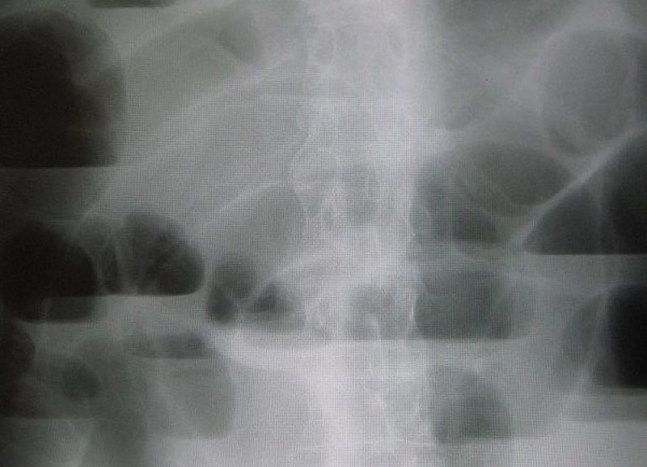
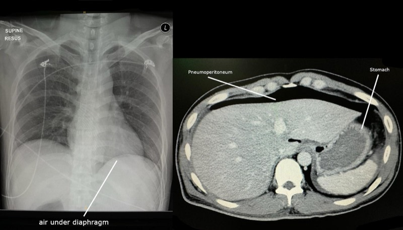
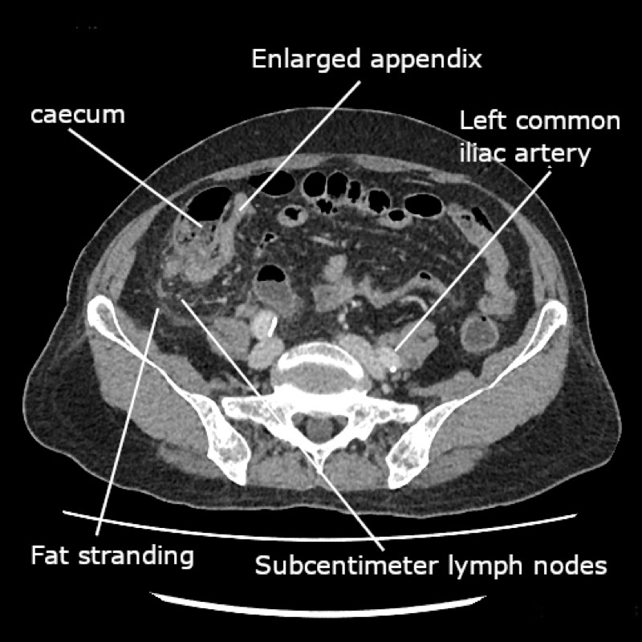
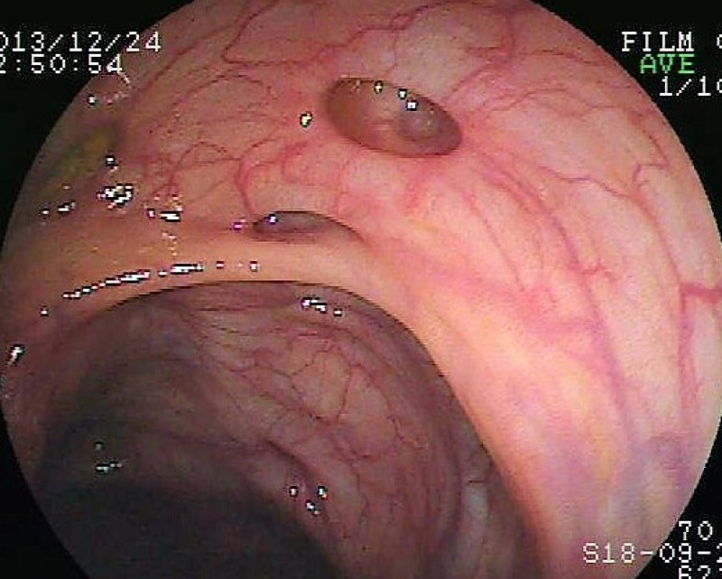
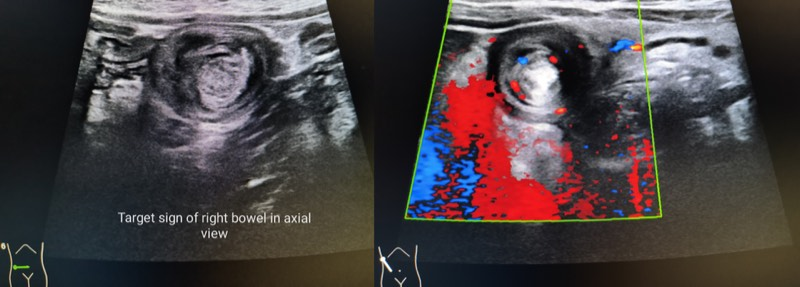

急性腹症與腸阻塞（闌尾炎、腸扭轉、腸繫膜缺血、疝氣、憩室炎）
一句話定位：這章近五年 55 題，45 題在二階，其中醫學五（外科）就佔 30 題。 出題邏輯高度一致：給一個腹痛情境，問「最可能診斷」或「下一步」。 只要把「痛的機轉 → 影像特徵 → 開刀時機」三段連起來，這章幾乎不會失分。
1. 定義與分類
- 急性腹症：突然發作、需要在短時間內決定是否手術的腹部病況。
- 腹痛三型（決定敘述方式的關鍵）：
| 型態 | 神經路徑 | 特徵 | 例子 |
|---|---|---|---|
| 內臟痛 | 自主神經傳入，雙側投射 | 位置模糊、位於中線、絞痛、伴噁心冷汗 | 闌尾炎初期的肚臍周圍痛 |
| 體壁痛 | 體神經（脊髓神經） | 定位明確、持續、咳嗽或移動加劇 | 闌尾炎後期的右下腹痛 |
| 轉移痛 | 共同脊髓節段 | 痛在遠處 | 膽囊炎痛到右肩胛、胰臟炎痛到背 |
這正是 113-1 醫學一 Q21「闌尾的疼痛主要由何者傳導」的知識層次： 初期是內臟傳入神經（隨交感神經、約 T10）→ 肚臍周圍； 發炎侵犯壁層腹膜後才轉為體神經支配的右下腹定位痛。
- 腸阻塞分類：
- 機械性 vs 功能性（麻痺性腸阻塞 ileus、假性阻塞 Ogilvie）。
- 小腸 vs 大腸。
- 單純性 vs 絞窄性（strangulated）、閉環性（closed loop）。
2. 流行病學
- 小腸阻塞最常見原因：術後沾黏（約六成以上），其次為疝氣、腫瘤、克隆氏症狹窄。 在沒有手術史的病人，疝氣的順位就往前提（114-2 醫學五 Q76、112-2 醫學五 Q77 的情境設計）。
- 大腸阻塞最常見原因：大腸癌，其次為乙狀結腸扭轉、憩室狹窄。
- 闌尾炎終生風險約 7–8%，好發 10–30 歲。
- 憩室症在西方以左側為主，亞洲人右側憩室比例明顯較高 — 這是台灣考題的本土差異點。
3. 病理與病理生理｜為什麼會痛、為什麼會壞死
3.1 闌尾炎的時間軸就是它的機轉
flowchart TD A[闌尾腔阻塞
糞石 淋巴增生 腫瘤] --> B[黏液持續分泌 管腔壓上升] B --> C[內臟傳入神經受刺激
肚臍周圍模糊痛 + 噁心] C --> D[靜脈與淋巴回流受阻 細菌增生] D --> E[漿膜層發炎波及壁層腹膜] E --> F[右下腹定位痛 McBurney 點壓痛
反彈痛 肌衛] F --> G[動脈血流受阻 → 壞死] G --> H[穿孔] H --> I{大網膜能否包住} I -->|能| J[局部膿瘍 或 蜂窩組織炎] I -->|不能| K[瀰漫性腹膜炎]
「痛先在肚臍後跑到右下腹」不是描述，而是機轉的必然結果 — 這句話要能自己推。
3.2 腸阻塞的惡化順序
阻塞 → 近端擴張、腸壁水腫 → 腸腔內積液積氣（第三間隙損失）→ 脫水、電解質異常 → 腸壁壓力超過靜脈壓 → 靜脈回流受阻 → 更水腫 → 動脈灌流不足 → 缺血、壞死、穿孔 → 細菌移位 → 敗血症。
絞窄的警訊：持續而非絞痛式的疼痛、心搏過速、發燒、白血球上升、 腹膜刺激徵象、乳酸與代謝性酸中毒、CT 上腸壁強化減少。 出現這些就從「可以觀察」變成「要開刀」。
3.3 腸繫膜缺血：四種機轉，處置完全不同
| 型態 | 機轉 | 線索 |
|---|---|---|
| SMA 栓塞（最常見） | 心房顫動、心肌梗塞後附壁血栓 | 突發劇痛、痛的程度與理學檢查不成比例 |
| SMA 血栓 | 既有動脈硬化 | 有餐後腹痛與體重減輕（慢性腸繫膜缺血）病史 |
| 非阻塞性（NOMI） | 低血流、休克、升壓劑、洗腎 | 重症病人、進展隱匿 |
| 腸繫膜靜脈栓塞 | 高凝狀態、門脈高壓、腹腔感染 | 較亞急性，年輕族群 |
經典描述：pain out of proportion to physical examination。 診斷首選 CT 血管攝影；不要等到腹膜刺激徵象出現才想到，那時腸子多半壞了。
3.4 憩室的形成
大腸憩室是假性憩息（只有黏膜與黏膜下層疝出）， 從血管穿入肌肉層的薄弱處（vasa recta 穿透點）突出 — 所以憩室出血的來源就是那條被拉扯的直小動脈，也解釋為何憩室出血通常無痛且量大。
4. 一階基礎：解剖與組織
| 一階知識點 | 內容 | 二階怎麼用到 |
|---|---|---|
| 三條結腸帶（taeniae coli）匯聚點 | 三條結腸帶在闌尾根部匯合 | 手術中循結腸帶找闌尾（114-1 醫學一 Q19） |
| 闌尾位置變異 | 後盲腸位最常見，其次骨盆位、盲腸下位 | 解釋非典型表現（後盲腸位可無明顯壓痛） |
| 內臟傳入與轉移痛節段 | 前腸 T5–9（上腹）、中腸 T10（臍周）、後腸 T11–L1（下腹） | 腹痛定位的推理基礎 |
| SMA 分支 | 下胰十二指腸、空腸迴腸動脈、中結腸、右結腸、迴結腸動脈 | 缺血範圍推理（SMA 供應到橫結腸右三分之二） |
| 分水嶺區 | 脾曲（Griffith）、直腸乙狀結腸交界（Sudeck） | 缺血性大腸炎好發位置 |
| 大腸特徵 | 結腸帶、結腸袋、腸脂垂；無絨毛 | 「下列何者不是大腸特徵」（112-2 醫學一 Q19） |
| Brunner 腺 | 十二指腸黏膜下層的鹼性黏液腺 | 「黏膜層與黏膜下層皆有腺體者」＝十二指腸（114-1 醫學一 Q44） |
| 腹膜後器官 | 十二指腸大部、胰臟、升降結腸、腎、腎上腺、主動脈、下腔靜脈 | 後腹膜出血與胰臟炎的痛法 |
| 中腸旋轉 | 胚胎期逆時針旋轉 270° | 腸旋轉不良與中腸扭轉 |
記法（腹膜後器官）：「SAD PUCKER」— Suprarenal、Aorta/IVC、Duodenum（2、3 部）、 Pancreas（除尾）、Ureter、Colon（升／降）、Kidney、Esophagus（下段）、Rectum。
5. 臨床表現與理學檢查
| 徵象 | 意義 |
|---|---|
| McBurney 點壓痛 | 闌尾炎 |
| Rovsing sign | 壓左下腹引起右下腹痛 |
| Psoas sign | 後盲腸位闌尾炎 |
| Obturator sign | 骨盆位闌尾炎 |
| Murphy sign | 膽囊炎 |
| 腸蠕動音高亢金屬音 | 機械性阻塞早期 |
| 腸蠕動音消失 | 麻痺性腸阻塞或腹膜炎 |
| 板狀腹 | 瀰漫性腹膜炎（如潰瘍穿孔） |
| Cullen／Grey-Turner sign | 後腹膜出血（重症胰臟炎） |
嘔吐物性質可以定位： - 非膽汁性：阻塞在 Vater 壺腹近端（幽門狹窄、十二指腸第一部阻塞）。 - 膽汁性：阻塞在壺腹遠端；新生兒膽汁性嘔吐 ＝ 外科急症（先排除中腸扭轉）。 - 糞臭味嘔吐：遠端小腸或大腸阻塞。
6. 實驗室檢查
- 白血球與 CRP：支持但不特異；正常不能排除。
- 乳酸：升高提示組織灌流不足／絞窄，但早期可正常（是最危險的假安心）。
- 電解質：反覆嘔吐 → 低血氯、低血鉀性代謝性鹼中毒。
- 血中 amylase／lipase：排除胰臟炎；腸缺血、穿孔時也可輕度升高。
- 育齡女性一律驗尿液或血清 hCG（113-2 醫學五 Q73 的右下腹痛女性題就在測這條思路）。
7. 影像判讀重點
| 影像 | 判讀重點 |
|---|---|
| 立位腹部 X 光 | 擴張腸圈、階梯狀氣液平面、橫膈下游離氣體（穿孔） |
| 乙狀結腸扭轉 | 咖啡豆徵（coffee bean sign）、鋇劑呈鳥嘴狀（bird beak）尖端指向左下 |
| 盲腸扭轉 | 擴張腸圈指向左上腹 |
| CT（小腸阻塞） | 移行點（transition point）、small bowel feces sign、閉環與腸壁強化減弱 |
| CT（闌尾炎） | 闌尾直徑 >6 mm、壁增厚強化、周圍脂肪浸潤、糞石 |
| CT（憩室炎） | 憩室、腸壁增厚、周圍脂肪浸潤、膿瘍或游離氣體 |
| CT 血管攝影 | 腸繫膜缺血首選；栓塞位置、腸壁強化消失 |
| 腸壁積氣（pneumatosis intestinalis） | 可為良性（如慢性肺病、類固醇），也可為腸缺血壞死的凶兆；要合併門靜脈積氣與臨床判讀（115-2 醫學五 Q15） |
| 超音波（小兒） | 腸套疊的靶心徵／甜甜圈徵；中腸扭轉的漩渦徵（whirlpool sign） |
| Meckel 掃描 | ⁹⁹ᵐTc-pertechnetate 偵測異位胃黏膜 |
8. 鑑別診斷（右下腹痛為例）
| 鑑別對象 | 關鍵區分點 | 一句話決斷 |
|---|---|---|
| 急性闌尾炎 | 痛從臍周轉移、發燒、白血球上升 | 轉移痛是最有力的病史 |
| 卵巢囊腫扭轉／破裂 | 突發、與月經週期相關、超音波見附件腫塊 | 育齡女性先驗 hCG 加婦科超音波 |
| 子宮外孕 | hCG 陽性、休克 | 漏掉會出人命 |
| 骨盆腔發炎 | 子宮頸舉痛、雙側 | 雙側痛較不像闌尾炎 |
| 腸繫膜淋巴腺炎 | 兒童、上呼吸道感染後 | 兒童常見的闌尾炎模仿者 |
| 克隆氏症迴腸炎 | 慢性腹瀉、體重減輕 | 手術中看到闌尾正常要檢查末端迴腸 |
| Meckel 憩室炎 | 兒童、與闌尾炎難分 | 術中闌尾正常要往迴腸找 |
| 右側輸尿管結石 | 絞痛放射至腹股溝、血尿 | 痛到打滾而非不敢動 |
一個好用的區辨：腹膜炎的病人不敢動；輸尿管結石的病人動個不停。
9. 分級／評分系統
| 系統 | 用途 | 適用族群 | 限制 | 國考陷阱 | 決策連結 |
|---|---|---|---|---|---|
| Alvarado | 闌尾炎臨床機率 | 疑似闌尾炎 | 女性與兒童特異性較低 | 誤當確診工具 | 高分可直接手術，中間分數做影像 |
| AIR score | 同上，含 CRP | 同上 | 同上 | — | 分層是否需影像 |
| Hinchey | 憩室炎穿孔程度 | 複雜性憩室炎 | 需 CT | Hinchey I 不必然手術 | III/IV 需緊急手術；I/II 可引流加抗生素 |
| WSES 分級 | 闌尾炎複雜度 | 闌尾炎 | — | — | 決定抗生素療程與手術方式 |
| Boey score | 潰瘍穿孔預後 | 穿孔 | — | — | 風險分層 |
10. 處置流程
flowchart TD
A[急性腹痛] --> B[生命徵象 + 腹膜刺激徵象]
B -->|不穩定或板狀腹| C[復甦 + 緊急手術評估]
B -->|穩定| D[病史 定位 hCG 血液檢查]
D --> E[影像：CT 為主 小兒與孕婦優先超音波]
E --> F{診斷}
F -->|闌尾炎| G[抗生素 + 闌尾切除
膿瘍成形者可先引流]
F -->|小腸阻塞| H{有無絞窄徵象}
H -->|有| I[緊急手術]
H -->|無| J[禁食 鼻胃管減壓 輸液
水溶性顯影劑可診斷兼治療
觀察 24-48 小時]
J -->|未改善| I
F -->|乙狀結腸扭轉| K[內視鏡減壓 後續擇期切除
有壞死或腹膜炎則手術]
F -->|盲腸扭轉| L[手術]
F -->|腸繫膜缺血| M[CTA 確診 立即血管重建或切除]
F -->|憩室炎| N{Hinchey 分級}
N -->|I-II| O[抗生素 ± 經皮引流]
N -->|III-IV| P[緊急手術]
11. 治療策略重點
11.1 闌尾炎
- 標準治療：闌尾切除術；腹腔鏡與開放式相比，傷口感染較少、恢復較快、 住院天數較短，但腹腔內膿瘍的發生率在部分研究中較高， 這個「有利也有弊」是考題最愛設計的錯誤敘述來源（111-1 醫學五 Q13、113-1 醫學五 Q53）。
- 延遲就醫、已穿孔者：術後最常見併發症是傷口感染與腹腔內膿瘍（111-2 醫學五 Q77）。
- 已形成局限性膿瘍（phlegmon／abscess）：可先抗生素＋經皮引流， 之後再考慮間隔性闌尾切除（interval appendectomy）。
- 單純性闌尾炎「純抗生素治療」是可行選項但復發率較高，屬於近年新增的討論點。
- 孕婦：闌尾炎仍是最常見的非產科手術原因；腹腔鏡在各孕期已可安全施行， 不再視為禁忌（112-1 醫學五 Q53 的方向）。
11.2 腸阻塞
- 基本三件事：禁食、鼻胃管減壓、輸液與電解質矯正。
- 水溶性顯影劑（如 gastrografin）：兼具診斷與治療效果， 若 24 小時內到達大腸，非手術治療成功率高。
- 手術指徵：絞窄徵象、閉環阻塞、腹膜炎、保守治療失敗、 無手術史者的完全阻塞（要想疝氣或腫瘤）。
- 絕不要忘記檢查疝氣孔 — 這是最常被漏掉的可矯正病因。
11.3 功能性阻塞
| 狀況 | 治療 |
|---|---|
| 術後腸阻塞（postoperative ileus） | 早期下床、咀嚼口香糖、限制鴉片類、alvimopan（周邊型 μ 鴉片受體拮抗劑，不過血腦障壁，故不影響中樞止痛效果）（112-2 醫學二 Q68） |
| 急性結腸假性阻塞（Ogilvie 症候群） | 矯正電解質、停用抗膽鹼與鴉片類藥物、neostigmine（需心電圖監測，注意心搏過緩）、內視鏡減壓（113-1 醫學二 Q68） |
11.4 腸繫膜缺血
- 時間就是腸子：及早 CTA、抗凝、血管內或外科血管重建、 壞死腸段切除，必要時 second-look 手術。
- NOMI 的關鍵是矯正低灌流狀態並停用血管收縮劑。
11.5 憩室炎
- 單純性（Hinchey I）：門診或住院抗生素；近年對低風險單純性憩室炎可不用抗生素有實證， 屬指引更新點。
- 膿瘍 >3–4 cm：經皮引流。
- 化膿性或糞性腹膜炎（Hinchey III/IV）：緊急手術（Hartmann 或一期切除吻合）。
- 急性期不做大腸鏡（穿孔風險），緩解 6–8 週後補做以排除癌症。
11.6 腹內感染的抗生素療程
達成感染源控制（source control）後，約 4 天的抗生素即足夠， 延長療程並不改善結果（113-2 醫學五 Q5 的方向）。
12. 預後
- 單純性闌尾炎手術死亡率極低；穿孔者併發症明顯上升。
- 小腸阻塞非手術成功者仍有較高復發率；沾黏性阻塞是反覆問題。
- 急性腸繫膜缺血死亡率仍高（可達五成以上），關鍵在診斷延遲。
13. 一階 ↔︎ 二階橋樑
| 一階考點 | 機轉 | 二階對應 | 臨床決策 |
|---|---|---|---|
| 內臟傳入神經節段（中腸 T10） | 臍周模糊痛 | 闌尾炎初期表現 | 早期不會有壓痛點 |
| 壁層腹膜由體神經支配 | 定位明確 | McBurney 點壓痛、反彈痛 | 腹膜刺激＝手術評估 |
| 三條結腸帶匯於闌尾根部 | 解剖標記 | 術中尋找闌尾 | 縮短手術時間 |
| SMA 供應範圍至橫結腸右 2/3 | 分水嶺區血流最弱 | 缺血性大腸炎好發脾曲 | 內視鏡取樣位置 |
| 大腸憩室由 vasa recta 穿透處疝出 | 血管被拉扯 | 憩室出血無痛且量大 | 下消化道出血鑑別 |
| 中腸旋轉 270° | 旋轉不良 | 新生兒中腸扭轉 | 膽汁性嘔吐＝緊急手術 |
| Meckel 憩室為卵黃管殘餘 | 含異位胃黏膜 | 兒童無痛血便 | ⁹⁹ᵐTc 掃描 |
| 鴉片受體在腸神經系統 | 抑制蠕動 | 術後腸阻塞 | alvimopan 不過血腦障壁 |
| 乙醯膽鹼酯酶抑制促進副交感 | 促進結腸蠕動 | Ogilvie 症候群 | neostigmine 治療 |
14. 高頻考點與陷阱
- 考點：闌尾痛的轉移機轉；三條結腸帶找闌尾。
- 考點：小腸阻塞最常見原因是沾黏；無手術史要想疝氣與腫瘤。
- 考點：pain out of proportion → 腸繫膜缺血 → CTA。
- 考點：乙狀結腸扭轉先內視鏡減壓；盲腸扭轉直接手術。
- 考點：alvimopan 與 neostigmine 各自的適應症。
- 陷阱：乳酸正常不能排除早期腸缺血。
- 陷阱：腹腔鏡闌尾切除不是每一項都優於開放式。
- 陷阱：急性憩室炎期間做大腸鏡。
- 陷阱：新生兒膽汁性嘔吐當成餵食問題觀察。
- 誘答設計：把「腸壁積氣一律代表腸壞死」寫成正確敘述（其實需合併臨床判斷）。
15. 口訣與記憶法
- 腹膜後器官：SAD PUCKER（見上）。
- 腸阻塞四大症狀：「痛、吐、脹、不通」（腹痛、嘔吐、腹脹、無排氣排便）。
- 小腸阻塞病因順序：「沾、疝、瘤」（Adhesion → Hernia → Tumor）。
- 大腸阻塞病因順序：「癌、扭、憩」。
- 絞窄五警訊：「持續痛、快心跳、發燒、白血球高、乳酸升」。
- 憩室出血特性：「不痛、很多、右邊也會」（亞洲人右側憩室多）。
- 扭轉處置：「乙狀先鏡、盲腸直接開」。
16. 2024–2026 值得關注的新研究與新療法
| 主題 | 內容 | 對考試的意義 |
|---|---|---|
| 單純性闌尾炎的抗生素治療 | CODA 等試驗顯示可行但一年內約三成需手術；有糞石者失敗率高 | 「手術 vs 抗生素」的條件式答案 |
| 單純性憩室炎免抗生素 | 多國指引已允許低風險族群僅支持療法 | 舊教科書與新指引衝突處 |
| 水溶性顯影劑於小腸阻塞 | 診斷兼治療的角色更明確 | 保守治療流程的標準步驟 |
| 腸繫膜缺血的血管內治療 | 導管取栓與溶栓應用增加 | 「立即開腹」不再是唯一答案 |
| ERAS 與術後腸阻塞 | 多模式止痛、早期進食、限制鴉片 | 從藥物治療走向流程管理 |
| 孕期腹腔鏡 | 各孕期安全性證據累積 | 舊觀念「孕婦不做腹腔鏡」已被推翻 |
| AI 輔助 CT 判讀 | 闌尾炎與腸阻塞偵測 | 趨勢題材 |
17. 心智圖
mindmap
root((急性腹症與腸阻塞))
腹痛機轉
內臟痛中線模糊
體壁痛定位明確
轉移痛共同節段
闌尾炎
阻塞到穿孔時間軸
三條結腸帶找根部
Alvarado評分
腹腔鏡利弊
腸阻塞
小腸沾黏疝氣腫瘤
大腸癌扭轉憩室
絞窄五警訊
水溶性顯影劑
功能性
術後腸阻塞alvimopan
Ogilvie用neostigmine
腸繫膜缺血
SMA栓塞最常見
痛與理學不成比例
CTA首選
憩室
假性憩室
vasa recta出血
Hinchey分級
急性期不做大腸鏡
小兒
膽汁性嘔吐為急症
腸套疊靶心徵
中腸扭轉漩渦徵
Meckel兩個二
18. 歷屆考題對照（111-1 ～ 115-2）
| 年度 | 階段/科目 | 題號 | 考點核心 | 答案方向 |
|---|---|---|---|---|
| 111-1 | 二階 醫學三 | 16 | 轉移性右下腹痛的診療處置 | 闌尾炎的評估流程 |
| 111-1 | 二階 醫學五 | 13 | 腹腔鏡闌尾切除敘述何者錯誤 | 並非所有指標都優於開放式 |
| 111-2 | 二階 醫學五 | 77 | 延遲就醫闌尾炎術後最常見併發症 | 傷口感染／腹腔內膿瘍 |
| 112-1 | 一階 醫學一 | 21 | 闌尾最不可能出現的位置 | 位置變異範圍 |
| 112-2 | 一階 醫學一 | 19 | 何者不是大腸的特徵 | 大腸無絨毛 |
| 112-2 | 一階 醫學二 | 68 | alvimopan 用於術後腸阻塞 | 周邊型 μ 受體拮抗劑 |
| 112-2 | 二階 醫學五 | 50 | 左下腹痛＋憩室炎病史 | 憩室炎分級與處置 |
| 112-2 | 二階 醫學五 | 77 | 老年男性腹脹無解便、無開刀史 | 大腸阻塞／乙狀結腸扭轉 |
| 113-1 | 一階 醫學一 | 20 | SMA 的分支 | 迴結腸、右結腸、中結腸等 |
| 113-1 | 一階 醫學一 | 21 | 闌尾疼痛的傳導 | 內臟傳入神經 |
| 113-1 | 一階 醫學二 | 68 | 急性結腸假性阻塞用藥 | neostigmine |
| 113-1 | 二階 醫學三 | 20 | 急性腸阻塞敘述何者錯誤 | 病因與處置細節 |
| 113-1 | 二階 醫學五 | 49 | 腸套疊敘述 | 好發年齡、復位方式 |
| 113-1 | 二階 醫學五 | 53 | 腹腔鏡 vs 開放闌尾切除 | 各自優缺點 |
| 113-2 | 二階 醫學三 | 18 | 急性腸阻塞敘述何者錯誤 | 同上 |
| 113-2 | 二階 醫學五 | 5 | 腹內感染抗生素使用期間 | 感染源控制後約 4 天 |
| 113-2 | 二階 醫學五 | 50 | 大腸腸扭轉 | 乙狀結腸與盲腸處置不同 |
| 114-1 | 一階 醫學一 | 19 | 手術中如何快速找到闌尾 | 循三條結腸帶匯聚點 |
| 114-1 | 一階 醫學一 | 44 | 黏膜層與黏膜下層皆有黏液腺者 | 十二指腸（Brunner 腺） |
| 114-1 | 二階 醫學五 | 32 | 急性闌尾炎敘述何者錯誤 | 診斷與處置細節 |
| 114-1 | 二階 醫學五 | 46 | 經腸繫膜缺損突出的疝氣 | 內疝（transmesenteric） |
| 114-1 | 二階 醫學五 | 72 | 療養院老人腹脹 X 光與鋇劑 | 乙狀結腸扭轉 |
| 114-2 | 二階 醫學五 | 76 | 腸阻塞病人到急診的處置 | 減壓、輸液、評估絞窄 |
| 115-1 | 一階 醫學一 | 44 | 消化道組織結構 | 各段黏膜差異 |
| 115-1 | 二階 醫學三 | 23 | 急性腸繫膜缺血敘述 | 痛與理學不成比例、CTA |
| 115-1 | 二階 醫學五 | 16 | 大腸憩室炎敘述何者正確 | 分級與治療 |
| 115-1 | 二階 醫學五 | 49 | 兒童無痛血便疑 Meckel | ⁹⁹ᵐTc 掃描 |
| 115-2 | 二階 醫學五 | 15 | 腸壁積氣的意義 | 良性與凶險並存，需臨床判讀 |
| 115-2 | 二階 醫學五 | 17 | 術後腸阻塞敘述何者錯誤 | 處置原則 |
19. 影像資源（標準圖片來源）
| 影像 | 建議來源 | 連結 | 授權 |
|---|---|---|---|
| 小腸阻塞氣液平面 | Radiopaedia — Small bowel obstruction | https://radiopaedia.org/articles/small-bowel-obstruction | CC BY-NC-SA 3.0 |
| 乙狀結腸扭轉咖啡豆徵 | Radiopaedia — Sigmoid volvulus | https://radiopaedia.org/articles/sigmoid-volvulus | CC BY-NC-SA 3.0 |
| 闌尾炎 CT | Radiopaedia — Acute appendicitis | https://radiopaedia.org/articles/acute-appendicitis | CC BY-NC-SA 3.0 |
| 腸繫膜上動脈栓塞 CTA | Radiopaedia — Acute mesenteric ischaemia | https://radiopaedia.org/articles/acute-mesenteric-ischaemia | CC BY-NC-SA 3.0 |
| 腸壁積氣與門靜脈積氣 | Radiopaedia — Pneumatosis intestinalis | https://radiopaedia.org/articles/pneumatosis-intestinalis | CC BY-NC-SA 3.0 |
| 腸套疊超音波靶心徵 | Radiopaedia — Intussusception | https://radiopaedia.org/articles/intussusception | CC BY-NC-SA 3.0 |
| 中腸扭轉漩渦徵 | Radiopaedia — Midgut volvulus | https://radiopaedia.org/articles/midgut-volvulus | CC BY-NC-SA 3.0 |
20. 自我測驗
測驗題原始碼
Q: 25 歲女性，三天前開始噁心與臍周疼痛，隔日疼痛轉移至右下腹並加劇，今日發燒。關於此疼痛轉移的機轉，下列何者最正確？ A) 初期為壁層腹膜受刺激的體神經痛，後期轉為內臟痛 B) 初期為內臟傳入神經受刺激造成的中線模糊痛，後期發炎波及壁層腹膜而成為定位明確的體壁痛 C) 疼痛轉移代表闌尾已經穿孔 D) 疼痛位置改變與神經支配無關，僅因闌尾解剖位置移動 ans: B why: 闌尾腔阻塞使管腔壓上升，刺激隨交感神經走的內臟傳入纖維（約 T10），故先出現臍周模糊痛；發炎侵犯壁層腹膜後由體神經支配，才轉為右下腹定位痛。疼痛轉移不等於穿孔。 Q: 78 歲男性，無腹部手術史，因腹脹、嘔吐與三天未排氣就醫。腹部 X 光見擴張腸圈與氣液平面。下列敘述何者最適當？ A) 最可能原因是術後沾黏 B) 因無手術史，應優先檢查疝氣孔並考慮腫瘤等其他病因 C) 應立即安排大腸鏡減壓 D) 乳酸正常即可排除腸絞窄 ans: B why: 沾黏是小腸阻塞最常見原因，但前提是有手術史。無手術史者要優先想疝氣（腹股溝、股疝）與腫瘤。乳酸早期可正常，不能用來排除絞窄。 Q: 72 歲心房顫動病人突發劇烈腹痛，理學檢查腹軟、壓痛輕微，與疼痛程度明顯不成比例。最適當的下一步為何？ A) 立即安排上消化道內視鏡 B) 給予止痛藥後觀察 6 小時 C) 立即安排電腦斷層血管攝影 D) 先安排腹部超音波確認膽囊 ans: C why: 心房顫動＋突發劇痛＋痛與理學不成比例，是腸繫膜上動脈栓塞的典型組合，診斷首選 CT 血管攝影。延遲診斷是此病死亡率高的主因。 Q: 關於術後腸阻塞（postoperative ileus）與急性結腸假性阻塞（Ogilvie 症候群）的藥物治療，下列配對何者正確？ A) 術後腸阻塞用 neostigmine；Ogilvie 症候群用 alvimopan B) 術後腸阻塞用 alvimopan；Ogilvie 症候群用 neostigmine C) 兩者皆首選 alvimopan D) 兩者皆首選 neostigmine ans: B why: Alvimopan 是周邊型 μ 鴉片受體拮抗劑，不通過血腦障壁，故能減輕鴉片類造成的腸道抑制而不影響中樞止痛，用於術後腸阻塞。Neostigmine 為乙醯膽鹼酯酶抑制劑，促進副交感活性以恢復結腸蠕動，用於 Ogilvie 症候群，使用時需監測心搏過緩。 Q: 關於大腸憩室的病理與臨床特性，下列何者最正確？ A) 屬於真性憩室，腸壁全層皆疝出 B) 憩室出血多為劇烈腹痛合併少量血便 C) 憩室由血管穿透肌肉層的薄弱處疝出，故出血常為無痛且量大 D) 急性憩室炎應立即安排大腸鏡以確定診斷 ans: C why: 大腸憩室是假性憩室（僅黏膜與黏膜下層疝出），從 vasa recta 穿透肌層的薄弱處突出，該血管受牽拉破裂即造成無痛性大量出血。急性期做大腸鏡有穿孔風險，應於緩解 6–8 週後再做以排除癌症。
21. Anki 卡片
Anki 卡片原始碼
腹痛三型與各自的神經路徑？ 內臟痛（自主神經傳入、中線模糊）、體壁痛（體神經、定位明確）、轉移痛（共同脊髓節段） 急腹症 闌尾炎疼痛從臍周轉移到右下腹的機轉？ 初期管腔壓上升刺激內臟傳入神經（約 T10）；發炎波及壁層腹膜後由體神經支配而定位明確 闌尾炎 手術中如何快速找到闌尾？ 循三條結腸帶（taeniae coli）匯聚點即為闌尾根部 闌尾炎 腹腔鏡闌尾切除相對開放式的優缺點？ 傷口感染較少、恢復較快、住院較短；但部分研究顯示腹腔內膿瘍發生率較高 闌尾炎 小腸阻塞與大腸阻塞最常見的原因？ 小腸：術後沾黏＞疝氣＞腫瘤；大腸：大腸癌＞乙狀結腸扭轉＞憩室 腸阻塞 腸絞窄的五個警訊？ 持續痛、心搏過速、發燒、白血球升高、乳酸升高與代謝性酸中毒（合併腹膜刺激徵象） 腸阻塞 水溶性顯影劑在小腸阻塞的角色？ 兼具診斷與治療，24 小時內到達大腸者非手術治療成功率高 腸阻塞 術後腸阻塞的藥物治療？機轉？ Alvimopan，周邊型 μ 鴉片受體拮抗劑，不過血腦障壁故不影響中樞止痛 腸阻塞 Ogilvie 症候群的藥物治療與注意事項？ Neostigmine（乙醯膽鹼酯酶抑制劑），需心電圖監測心搏過緩 腸阻塞 急性腸繫膜缺血的四種機轉？何者最常見？ SMA 栓塞（最常見，常見於心房顫動）、SMA 血栓、非阻塞性 NOMI、腸繫膜靜脈栓塞 腸缺血 急性腸繫膜缺血的經典臨床描述與首選檢查？ Pain out of proportion to physical examination；首選 CT 血管攝影 腸缺血 大腸憩室為何種憩室？出血機轉？ 假性憩室（僅黏膜與黏膜下層疝出），由 vasa recta 穿透肌層處突出，血管受牽拉破裂造成無痛大量出血 憩室 乙狀結腸扭轉與盲腸扭轉的處置差異？ 乙狀結腸扭轉先內視鏡減壓再擇期手術；盲腸扭轉直接手術 腸扭轉 乙狀結腸扭轉的典型影像徵象？ 腹部 X 光咖啡豆徵；鋇劑呈鳥嘴狀 腸扭轉 非膽汁性與膽汁性嘔吐的定位意義？ 非膽汁性代表阻塞在 Vater 壺腹近端；膽汁性代表阻塞在壺腹遠端，新生兒膽汁性嘔吐為外科急症 急腹症 腹膜後器官的記憶法？ SAD PUCKER：腎上腺、主動脈與下腔靜脈、十二指腸、胰臟、輸尿管、升降結腸、腎、食道下段、直腸 一階基礎 缺血性大腸炎好發部位與原因？ 脾曲（Griffith 點）與直腸乙狀結腸交界（Sudeck 點），因位於血流分水嶺區 腸缺血 腹內感染達成感染源控制後的抗生素療程？ 約 4 天即足夠，延長療程不改善結果 急腹症 Hinchey 分級與手術時機？ I 局限膿瘍、II 骨盆膿瘍、III 化膿性腹膜炎、IV 糞性腹膜炎；III/IV 需緊急手術 憩室 腸壁積氣代表什麼？ 可為良性（慢性肺病、類固醇）也可為腸壞死凶兆，需合併門靜脈積氣與臨床狀況判讀 影像
22. 參考資料
- Di Saverio S, et al. WSES Jerusalem guidelines for diagnosis and treatment of acute appendicitis.
- CODA Collaborative. Antibiotics versus appendectomy for appendicitis. N Engl J Med 2020.
- Sartelli M, et al. WSES guidelines for the management of acute left-sided colonic diverticulitis.
- Bala M, et al. Acute mesenteric ischemia: WSES guidelines.
- Sawyer RG, et al. STOP-IT trial：Trial of short-course antimicrobial therapy for intraabdominal infection.
- 考選部，111-1～115-2 醫師分階段考試試題與答案（公開資料）。
圖譜
以下圖片來自 Wikimedia Commons，授權為 CC0／PD／CC BY／CC BY-SA，已逐張人工確認內容與說明相符。







